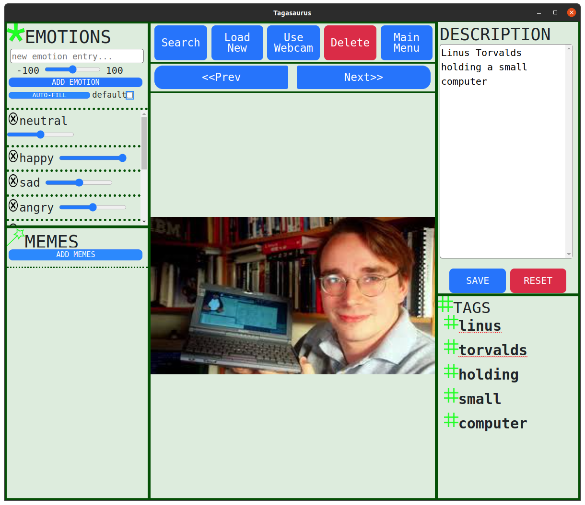

Tagasaurus
tag your planet..!
Windows OS Installation
- '.exe' Installer: [download from github] sha256 hash: 841d62215ab2dc0340f7b96da46037cccfe7521f973a9f6c46c3de6d97836940
- '.zip' Executable: [download from github] sha256 hash: 8adf7fa6daf9dbf423aadd98c8874cd30bdbf398d4bc525d9f9f02be2ec887bf The zip executable allows the user to run the application tagasaurus.exe from the unzipped folder. All the data is held in a new folder created next to the unzipped folder. This is especially useful if you want to put Tagasaurus on a USB (or external disk), and run it from directly off the external space keeping all the Taga data there to transport & store.
- '.deb' Debian/Ubuntu: [download from github] sha256 hash: f4a3cfa39735af281f8ef27bae7f1101471bfc403dd357142b5018ade07248dd
- '.rpm' Fedora/CentOS: [download from github] sha256 hash: 057c95a6505574c023e45af784d1e1a41a40a2ca905e34fa0c7e4ccab6bfd772
- '.tar.gz' Generic Linux: [download from github] sha256 hash: 8cfcc906adf1f139ff070fdf62e7374b089bf457d65b31b8e45e80e7ee96063a
- '.zip' Generic Linux: [download from github] sha256 hash: 51a9621e14d6408d6938757a1a2fff0c1b2b78617af6eb6db651cbf0e4984689
USAGE:
- Annotate Images with 'Descriptions', 'Emotion values', and 'Memes'
- Search for images and memes based upon Annotations or use facial recognition to find similar faces using the button 'Similar Search'
- Create Collections of images and add Annotations to the collections to later search for them
- Use the Super Search tool to search based upon Annotations or even webcam images using facial recognition
- Maintain privacy as the app does not access the internet in any way

LINKS:
- code repository: https://github.com/mantzaris/Tagasaurus
- Facebook: https://www.facebook.com/TagasaurusApp
- Twitter: https://twitter.com/Tagasaurus_app